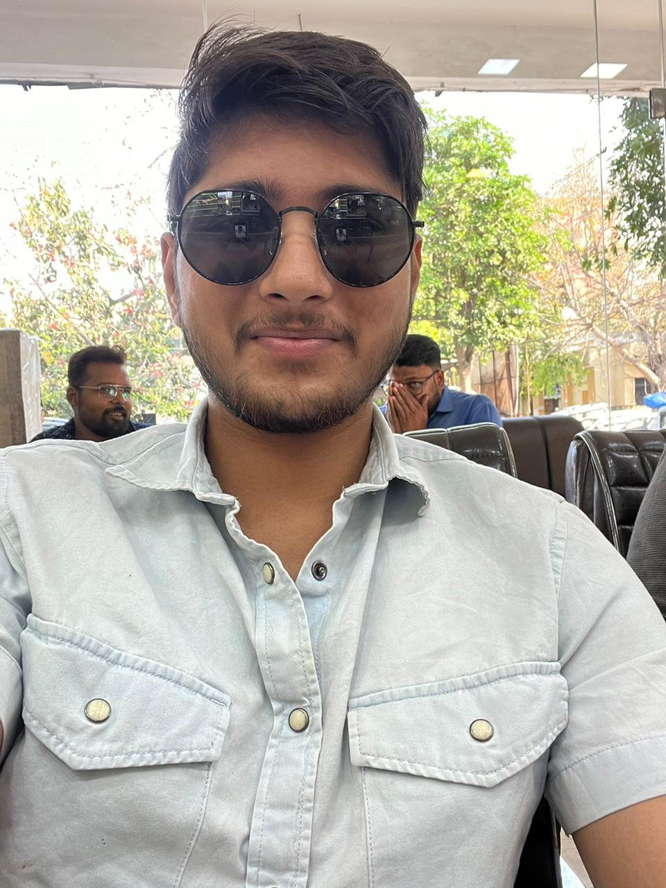

My love for you💕
Dear Anang, this is for you 🤞💖
"Every moment spent with you feels like
a chapter from my favorite book 🥹,
and I can't help but want to write more stories together.🫀
Would you do me the honor of allowing me 🫶
to be your co-author in this😚
beautiful journey called life🥹💕?"
Tum mile to lamhe tham gaye🥹
Note: Play the video Before Read it.. play on youtube i dont know why this is not working😭
Please turn the page..
Chapter 1: The Beginning
Introduction:
Today is a special day, one that she had been looking forward to for so long. She is writing this diary so that he will know what she feels in whole journey. She said – “First of all, Happy Birthday!!”🎈🎂
This is the day that she finally started talking to him. She had been waiting for this moment for ages. The butterflies in her stomach wouldn’t stop fluttering, and her heart feels like it’s on overdrive. She doesn't even know what she should say to him—kya baat krni h? Kese shuru kru? Bas baat karni h, and that's all that matters. 😂
It’s funny how long she’s liked him, how much he’s been on her mind over the years, but it always felt like something held her back. She had wanted to talk to him for so long. She remembers when they used to play hide and seek—those moments were everything to her, even though they didn’t talk much back then. She was thinking that they should have started talking before maybe they’d be closer today. 😂😂
But forget all that! .This is the start of something beautiful—she just knows it.
Chapter 2: The First Steps
Friendship:
It’s so strange how quickly things can shift. One moment they're just two people talking, and the next moment she's realizing how much he already means to her. His smile... 😭 It’s like a light that makes everything better. Ache to dikhte hi ab bhi. Tumhari muskaan hamesha se usse pasand thi, aur ab wo muskaan uske din ko banane lagi hai. And as they spend more time together, she’s starting to see that they can be very good friends. Who knows? Baaki uske baad ka dekhenge.
She wishes one day she could tell him everything—like how she feels about Krishna and how much faith means to her. She wants to share every little detail with him, and maybe, just maybe, they’ll become best friends. 😭 If they become that close, there’ll be nothing she wouldn’t share with him. But for now, they’ll take things one day at a time and see what happens. Okay, they’ll see ki kya hota h aange! 😂
Youuuu loose!! 😁 She can't believe how much fun they’re having together! They spend all day talking, kittaaa baat krogee, poore din baat hi krte rehte hain. 😂 And honestly, she loves every second of it. Usse usse baat krke acha lgta h yaar, sch m. It doesn’t even matter what the topic is, they just talk about any random topic all day long, and she wouldn’t trade it for anything.
Chapter 3: Confessions and Proposals
The First Proposal:
Date: 30 May (Shaam)
She still can’t believe the words that came out of his mouth that day. It was so unexpected! He suddenly asked her, "Mere ghrwale agar tumhare ghar rishta lekr aayein to haan krdogi kyaa?" 😭 It was like her whole world stopped for a moment—ese kon poochta h ek dum se? He caught her off guard, but the answer in her heart was obvious. Of course, haan krdungi, but how does she even say that to him? How does she express everything she feels for him in words? 😭
He’s the person she’s always wanted to be with, even when she didn’t realize it. "Main taa tere naal hi rehna ji, har gham sang tere sehna ji. Jo jag se kaha na jaaye woh, mujhko bas tujhse kehna ji." She didn’t say it aloud at the time, but that’s what her heart was screaming. And that night, after he asked her, she couldn’t stop thinking about it. Could this be real? Is this the beginning of something even more beautiful than she imagined?
Date: 31st May
And then came that moment—the one they both had been building up to for what felt like forever. "Okay, finally😭 I love you too, baby ❤️❤️." He doesn’t even know how much those words meant to her, but to be honest, ese koi propose krta h kya? She thought it would be more like the movies, but it's okay... fine, she’ll let it slide. 😂😭
Their little exchange was both hilarious and sweet:
• Her: "Do you love me?"
• Him: "No."
• Her: "Okay."
• Him: "What happened?"
• Her: "Nothing."
• Him: "I love you."
• Her: "Okay."
• Him: "You don’t love me?"
• Her: "I love you too."
What is this?! 😂😂 Like seriously? But even if it wasn’t the smoothest confession, what really matters is that they love each other. And that’s all she needs. She’ll do every single thing to keep it this way. Please, just promise her one thing—don't ever change. Don't ever stop being the person she fell in love with. She trusts him completely, and she knows he won’t let her down. ❤️
"Dil se sun Piya ye dil ki dasta, Jo lafzon m ni ho bayan." That’s how she feels every time she thinks of him.
Chapter 4: First Meetings and Deeper Connections
The First Meeting:
Date: 9th August
Oh my god, Jaan, we finally met!! ❤️😭 She still can’t believe it—he is actually so handsome. Seriously, when she saw him for the first time, her eyes couldn’t stop staring. It’s like her heart stopped when she saw him standing there, looking perfect. The way he held her hand, uff... She thought she might just die of happiness. 😭❤️
She remembers that moment when she was scared, and he just casually said, "Ni lgegi, me hu na." 😭 He put his hand over hers, and she knew in that moment that she could trust him with everything. The whole world seemed to disappear, and it was just them. She felt so safe, like nothing could go wrong as long as he was there with her.
She didn’t even check his phone because she trusts him completely, Chintu. And she knows he’s so scared of her that he won’t even play PUBG anymore. 😂😂 She loves that! She won’t talk to him ever again, but she always wants his hand close to her.
There was something else she wanted to do that day... She wanted to kiss him. But more than that, she wanted to hug him—just feel his arms around her. 😭❤️ Kisi aur din milenge Jaan, ache se pkkaa. And she’ll get that hug... eventually. ❤️
Chapter 5: The First Break
Family Interference:
And then, it all started falling apart... His bua found out about them, and suddenly everything changed. 😭 She could feel it slipping away, but she didn’t want to accept it. She doesn’t understand why she was so against them. She didn’t want to lose him, but she had to understand—he was happy with her. She didn’t realize how much they loved each other. She was hoping ki sab thik chle, but nothing seemed to work out, and now it feels like the end is near... 😭
There’s so much she wishes she could say to his family—to his parents, especially. Does this really matter to them? Can’t they see that their son is happy with her? Why isn’t his happiness enough? Ask him once—just once. He loves her a lot, and she knows she can keep the whole family happy, she swears.
But nothing worked. Nothing changed. And the day they started talking—4th April—was also the day they broke up. 💔 The two people who were once so deeply in love were suddenly torn apart by forces outside their control. It hurts so much to think about it, but sometimes things don’t go the way one wants them to.
Life doesn’t always follow plans... and maybe that’s what makes it so unpredictable and painful.
Date: 9th April
He sent her pictures with his female friend, and it felt like a dagger to her heart. 😭 How can he move on so quickly? It’s only been five days since they broke up, and now he’s with someone else? But she trusts him... she has to.
He said she’s just a friend, but she can’t help but feel jealous. He’s ignoring her messages, leaving them on seen. How can she complain when he’s no longer hers? 😢
She’s trying so hard to be happy for him, but it’s killing her inside. She cries herself to sleep, but she doesn’t want to disturb him with her pain. They were supposed to have their first time together, name their kids together... now it’s all slipping away.
Almost after one year....
Chapter 6: The Return
The Unexpected Return and the Pain:
Date: 10th August
Guess what happened? He came back. 😂❤️ After everything that had transpired, she never thought she’d see this day. Her heart soared with happiness, something she hadn’t felt in a long time. There was no one as elated as she was in that moment. They talked for hours, about four, reminiscing and reconnecting.
He apologized for everything—the hurtful blocking, the distance, everything. He admitted it was all because of his new girlfriend. He said, “No one is like you. You trusted me a lot, you loved me. Tere jaisi ladki mujhe is duniya mein mili hi nahi hai.” ❤️
Those words brought tears to her eyes. Even after a year, she was still the same person he had left behind. She had the same trust, the same love for him. She worked so hard to have him back in her life. She cracked JEE Mains and got into a government college, and all of it felt worth it if she could just have him back. ❤️❤️
They began talking like before—daily calls that lasted for hours. It felt like the old times, and her heart was filled with hope and affection once more. But then, just when she thought things were getting better, he said he liked her cousin. 😢 That news hit her hard. Yet, she couldn’t do anything; they were just friends, best friends. She even started talking to her cousin, just to keep him happy, even though it tore her apart inside. 😭
Their conversations shifted back to them, their love, and the things that mattered to them. He cried over how much he loved her, and she trusted him. She wanted to believe that his new girlfriend was no longer a part of his life. For a while, it seemed like they were back to where they started, with love and trust rebuilding slowly.
They talked for a year and a half like old times. Her feelings deepened, and she became more attached. She trusted him completely, convinced that he had no other girlfriend. But then, out of the blue, she asked him if he still talked to her. He said, “Yes.”
The shock and pain were overwhelming. 😭 For the third time, she cried deeply. Despite everything, she stayed by his side. When one falls for someone, they begin to overlook their flaws and mistakes. She was no exception. Even knowing he still had someone else in his life, she hoped, prayed, and wished that somehow, things would work out between them.
Over the next few months, things didn’t get any better. She was deeply hurt, and it showed in every aspect of her life. The pain was a constant companion, but she continued to hope, even though the situation seemed bleak.
Chapter 9: The Accident and Its Aftermath
Date: 25 November
It was a day marked by sudden and shocking changes. He was in a severe accident—a horrific one that left everyone in distress. 😢🚑 She was by his side throughout, providing the support and comfort he needed during that harrowing time.
He reached out to her with a heart-wrenching request: "Take care of my mom and dad." Those words weighed heavily on her. She was overwhelmed with stress, unable to eat for three days as she stayed by his side, ensuring he had everything he needed. 💔🍲
For two straight months, she was there for him, every single day. They spent their nights watching movies and web series together on Google Meet, creating a new set of memories amidst the uncertainty and fear. When he played games, she would be asleep, knowing that he was there with her, even if virtually. 🎬🌌🎮
During this period, they forged a deep bond. Their conversations, their shared moments, and their mutual support were significant. They captured many pictures and memories, a testament to their time together through the ordeal. 📸💕
But then, everything took a turn. Suddenly, things changed. Their communication dwindled. They stopped talking like they used to. He began to ignore her messages, sometimes for days on end. The closeness they had built seemed to crumble. 🕰️😔
Dont know what the next chapter should be , may be thats the last chapter or may be it will not ..
All depends on the way they will talk..
let's see what happen nextt..
If you want to add something then tell me i ll add
and if you liked it then click on the button "yes"